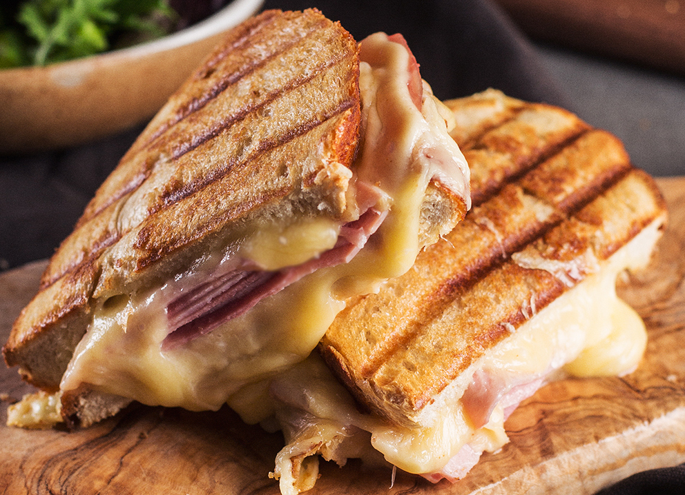

Some Belgian's "Winter" Croque

Description
Because Winter Holidays means Raclette Cheese leftovers.
Ingredients
-
2 Slices of Bread
-
~ 2 Slices of Meat
NOTE: Whatever Meat is Left Over or Available be good
-
~ 2 Slices of Raclette Cheese
-
Herbes de Provence, Pepper, Dried Ghost Pepper Flakes
NOTE: Or any Spicy flakes available
-
Dijon Mustard
-
Butter
NOTE: Highly Optional, mosty depending on "croque-ing" Method
Instructions
-
Put Slices of Bread next to Each Other
-
Put Raclette Cheese on Top of Slices
-
Put Meat on One of Those
-
Close the Slices
-
Remove Top Slice
-
Sprinkle Herbes de Provence, Pepper, Dried Ghost Pepper Flakes to Taste
-
Moderately Spread Dijon Mustard over 1 side Of the Removed Slice
-
Put "Dijon'd" Side on The other Slice's Toppings
-
-
If ( One has a Panini Press or Equivalent )
-
Put Croque in Press
-
Remove When Both Sides are Golden and Cheese is Melted
-
If ( One has no Panini Press or Equivalent )
-
Spread Butter on Outside of Both Slices
-
Put Croque on Warm Pan
-
Flip after a While
-
Repeat Previous Step until Both Sides are Golden and Cheese is Melted
-
Remove Croque from Pan
-
Cut Diagonally for No Reason